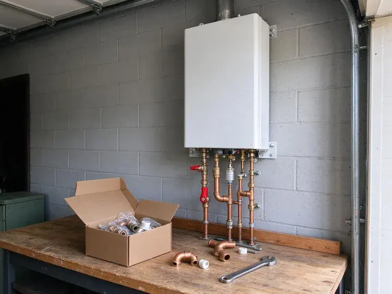

Water Softener Installation in Bellflower, CA
Our Bellflower, CA plumbers install water softeners on existing loops or add new loops for clean, soft water all through your home.
- Licensed and Insured Plumbers
- Guaranteed Satisfaction
- Prompt, Dependable Service
- Free Water Hardness Testing

Say goodbye to hard water scale with a new softener in Bellflower, CA.
Our team is standing by to help you choose the best water softener for your needs and install it efficiently.
Professional Water Softener Installation in Bellflower, CA
FKM Plumbing offers comprehensive water softener installation services throughout Bellflower, CA. Municipal water across much of Southern California is hard, leaving white scale on faucets, showerheads, and inside water heater tanks. Hard water can cause scale buildup in pipes, reduced appliance lifespan and dry skin.
Our expertise includes:
- Precise plumbing for seamless system integration
- Installation of all major water softener brands
- Expert sizing and selection of water softener systems

Additional Plumbing Installation Services in Bellflower, CA
We install water heaters, pumps, lines, and fixtures across Bellflower, CA with careful, permitted work that passes inspection the first time.


Customers
Why Choose FKM Plumbing for Water Softener Installation in Bellflower, CA?
Choosing FKM Plumbing for your water softener installation means partnering with local experts who understand Southern California water conditions. We are focused on delivering lasting solutions that improve your home's water quality.
- Cleaner Home, Say goodbye to stubborn soap scum and hard water spots on fixtures and dishes.
- Local Expertise, We understand the water hardness issues common in Bellflower and throughout Southern California.
- Accurate Testing, We test hardness and chlorine levels before suggesting a system.
Citywide Coverage
We install water softeners in homes and condos throughout Bellflower. Many newer homes have a pre-plumbed softener loop, which makes installation quicker.
Experienced Team
Our team of licensed plumbers brings years of specialized experience in water softener installation to every job. We are trained on the latest technologies and best practices, ensuring your system is installed correctly and functions well.
Safety-First Approach
Softener drain lines must have an air gap to prevent backflow into the system. We install drain connections that meet code and preserve your water quality.
Trusted Certified Bellflower Plumbing Services Professionals
At FKM Plumbing, we take pride in providing licensed, certified plumbing services throughout Bellflower, CA. Backed by recognized industry credentials, our experienced plumbers combine technical skill with genuine customer care. Whether it is repair, installation, or maintenance, we follow strict safety and quality standards to deliver long-lasting results you can trust.
Call Us Now PHCC Plumbing Contractor Recognition
PHCC Plumbing Contractor Recognition Better Business Bureau (BBB) Accreditation
Better Business Bureau (BBB) Accreditation Angi Certified Pro
Angi Certified Pro ISO 9001 Quality Management Certification
ISO 9001 Quality Management CertificationReliable Water Softener Installation Services in Bellflower, CA
Commercial Water Softener Installation in Bellflower, CA
FKM Plumbing also provides robust commercial water softener installation for businesses in Bellflower, CA. Restaurants, hotels, laundromats and other commercial properties often face serious challenges from hard water. Our commercial systems are built for higher demand, protecting expensive equipment, improving product quality and reducing operating costs. We work efficiently to minimize disruption to your business operations.

Combination Softener and Carbon Filter Systems in Bellflower, CA
Municipal water often contains chlorine or chloramine that affects taste and smell. A carbon filter paired with a softener removes those chemicals and protects resin. We install combination systems with filter and softener tanks or dual-stage units. This setup improves both water quality and feel. Many homeowners notice a real difference in taste.
Culligan Water Softener Installation in Bellflower
We are experienced in installing a wide range of water softener brands, including popular models from Culligan. Culligan systems are known for their reliability and performance. Our technicians are familiar with the installation requirements for various Culligan models, making sure your new system is set up correctly for effective hard water treatment in your Bellflower residence. We handle all connections and programming.
Whole-House Water Softener Systems in Bellflower
A whole-house water softener system is installed directly on your main water line, treating all the water entering your Bellflower home. This means every faucet, shower and appliance receives soft water. Our installation process involves carefully integrating the system into your existing plumbing, including needed bypass valves and pressure regulators, to provide comprehensive protection against hard water throughout your property.
Pelican Water Softener Installation in Bellflower, CA
Pelican Water Systems offer a variety of water treatment solutions, including both salt-based softeners and salt-free conditioners. If you've chosen a Pelican system for your Bellflower, CA home, FKM Plumbing can provide expert installation. Our plumbers ensure proper sizing, secure connections and correct startup procedures to get the most from the effectiveness and lifespan of your Pelican water softener or conditioner.
Water Softener Replacement Services in Bellflower, CA
If your old water softener is failing, inefficient or beyond repair, FKM Plumbing provides professional replacement services. We can help you upgrade to a newer, more efficient model that better suits your current needs and budget. Our team handles the safe removal and disposal of your old unit and installs the new system with minimal disruption to your Bellflower, CA home.
Reverse Osmosis Drinking Water Systems in Bellflower
Reverse osmosis systems remove dissolved solids, which can be high in some water supplies. We install RO units under the kitchen sink with a dedicated faucet. Some systems also connect to refrigerators or ice makers. RO pairs well with a softener for complete water treatment. We change filters on a schedule so the system keeps performing.

Ecodyne Water Softener Installation in Bellflower
We also install Ecodyne water softeners, which are designed for robust performance and ease of use. These systems often come with user-friendly features and provide consistent soft water results. Our plumbers are familiar with Ecodyne specifications, delivering a correct and efficient installation for your Bellflower home.
Water Softener Installation Near Me in Bellflower, CA
When you need professional water softener installation, you want a trusted local company. FKM Plumbing offers convenient, high-quality service, making sure that residents in Bellflower and surrounding towns have access to the best hard water solutions. Call us for service that's truly 'near me' and focused on your community.
We understand the need for soft water in homes with hard water problems. Our commitment to the Bellflower community means we're always ready to deliver reliable water softener installation services right to your doorstep. Call us today to experience the difference.
FKM Plumbing at a Glance
- Fully licensed plumbing team covering Bellflower, CA
- 24/7 emergency service with same-day scheduling
- Clear written estimates, no hidden fees
- 4.8-star rated by 754+ Southern California customers
Bellflower Map
Bellflower Information
- Population
- 75,122
- Area codes
- 562/714/626
- Service area
- Bellflower and communities within 40 miles
- Nearby
- Lakewood, Norwalk, Downey, Lynwood
Installing a water softener is especially beneficial for homes in Bellflower, CA with hard water, which can lead to significant scale buildup and appliance damage. Municipal water across much of Southern California is hard, leaving chalky scale on faucets, showerheads, and inside water heater tanks.
Expert Services
Trust our professionals for reliable FKM Plumbing solutions in Bellflower, CA.
Our Specialized Plumbing Services in Bellflower, CA
At FKM Plumbing, we provide a complete range of plumbing services across Bellflower, CA. From leak detection to full system installations, our team ensures fast, precise, and affordable service for both residential and commercial properties. Explore our core services below:


How Our Water Softener Installation Process Works in Bellflower, CA
Our water softener installation process is designed for efficiency and customer satisfaction. We make sure every step is clear and tailored to your Bellflower home's needs.
Request a Quote
Contact FKM Plumbing by calling (213) 871-0701 or filling out our online form. We will discuss your hard water concerns and schedule an initial consultation to assess your needs.
On-Site Assessment
Our experienced plumber will visit your Bellflower home to test your water hardness, evaluate your plumbing system and discuss suitable water softener options. We'll provide a clear, upfront estimate.
Professional Installation
Once you approve, our team will proceed with the water softener installation. We handle all plumbing connections, ensure proper drainage and test the system carefully for optimal performance.
Frequently Asked Questions About Water Softener Installation in Bellflower
Most water softener installations cost $1,500 to $4,000 including equipment. Adding a new softener loop typically adds $500 to $1,500 depending on access.
We install a variety of trusted water softener brands known for their reliability and performance, including Fleck, Culligan, Ecodyne and Kenmore. Our plumbers can guide you through the options and help you select the best brand and model for your specific needs and budget.
Installing a water softener offers many benefits, including preventing scale buildup in pipes and appliances, extending appliance lifespan, reducing soap and detergent usage and improving the feel of your skin and hair. It also makes cleaning easier and keeps clothes looking brighter.
In many cases a specific permit is not required for a standard residential water softener installation. However, if the installation involves significant changes to your home's main water line or drainage system, a permit might be necessary. Our team will advise you on any permit requirements for your project in Bellflower.
Installing on an existing loop usually takes two to three hours. Adding a new loop can take half a day or more.
Salt-based softeners add a small amount of sodium. Many homeowners add an RO system at the kitchen sink for drinking and cooking.
While some homeowners attempt DIY water softener installation, it's strongly recommended to hire a professional plumber. Proper installation involves careful plumbing connections, understanding water pressure and ensuring code compliance. Professional installation prevents leaks, supports reliable performance and protects your warranty.
We install softeners with Fleck and Clack control valves and other dependable brands. We recommend systems based on performance and serviceability.
What People Are Saying About Our Plumbing Experts?

Sofia M.
Two new toilets installed in one visit, no mess left behind, and the tech even adjusted a faucet he noticed was dripping. Fair pricing and really friendly.
Toilet Installation · Compton, CA
Robert G.
The trenchless sewer replacement saved our front yard. They walked us through the camera inspection footage first so we knew exactly what we were paying for.
Sewer Line Replacement · South Gate, CA
Emily R.
I called FKM Plumbing for plumbing repair, and the technician was fast, polite, and thorough. They explained the problem clearly and fixed it the same day. I will definitely hire them again. Highly recommended!
Plumbing Repair · Lakewood, CALaura S.
I scheduled a water heater replacement, and the team made the process smooth and affordable. The new unit works perfectly, and they cleaned up after completing the job.
Water Heater Replacement · Lakewood, CA
Patricia H.
We had a slab leak that two other companies could not find. FKM Plumbing located it in under an hour, explained our options, and the price matched the quote to the dollar.
Slab Leak Repair · Norwalk, CAJames P.
Our commercial plumbing system had a leak under the sink, and FKM Plumbing handled it professionally. The plumbers arrived quickly and restored everything without disruption to our customers.
Commercial Plumbing · Compton, CA